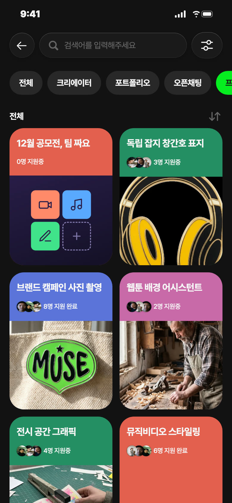
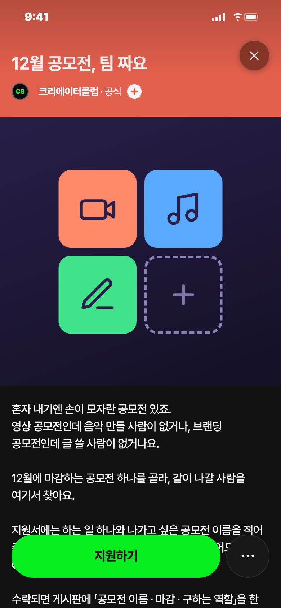
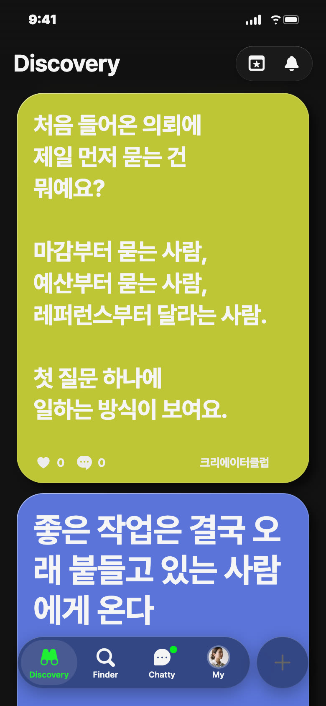
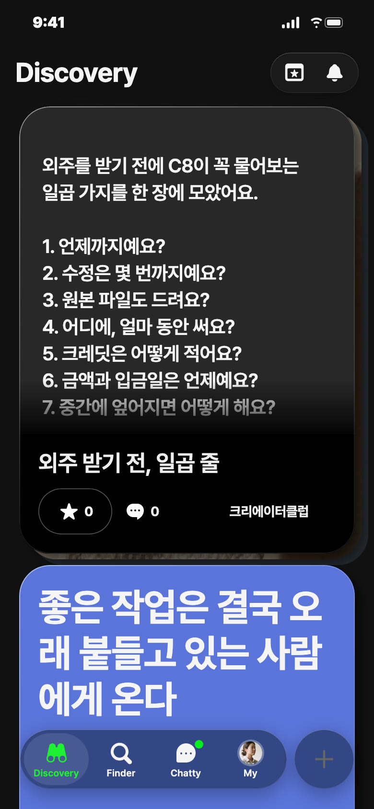
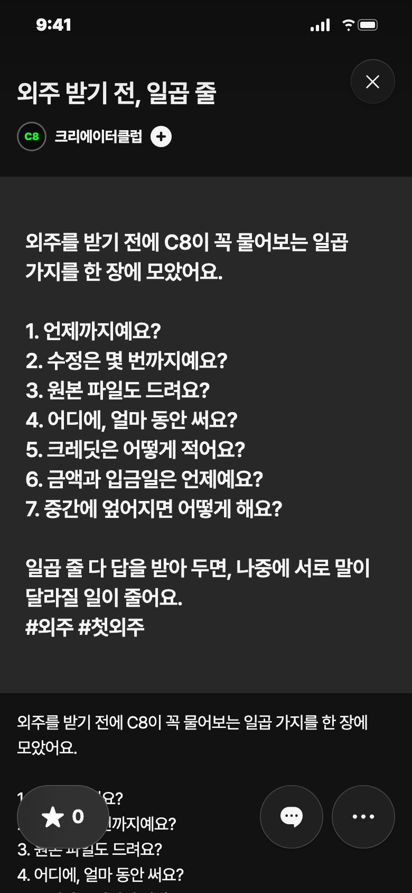

C8 앱 게시 시안 · 11/11(수) — 오늘 추천: 프로젝트 · 오후 7시
오늘 추천 · 프로젝트 · 코랄


칸: 바깥과 잇기 × 판 열기
왜 오늘: 12월 마감 공모전 팀을 짜기엔 11월 중순이 마지막 여유, 수요일 프로젝트 자리
보낼 사람: 영상 공모전 준비하는 친구에게 「너 음악 구한다며, 여기 올려」
받고 싶은 지원: 「작곡해요. 영상 공모전 팀에 BGM 맡고 싶어요」
제목
12월 공모전, 팀 짜요
카테고리
바깥과 잇기
모집 내용
하는 일 하나 · 나가고 싶은 공모전(없으면 비워도 돼요) · 11/12~12/31 · 상품 없음
설명
혼자 내기엔 손이 모자란 공모전 있죠. 영상 공모전인데 음악 만들 사람이 없거나, 브랜딩 공모전인데 글 쓸 사람이 없거나요. 12월에 마감하는 공모전 하나를 골라, 같이 나갈 사람을 여기서 찾아요. 지원서에는 하는 일 하나와 나가고 싶은 공모전 이름을 적어 주세요. 아직 정한 공모전이 없으면 하는 일만 적어도 돼요. C8 운영자가 지원서를 보고 멤버로 수락해요. 수락되면 게시판에 「공모전 이름 · 마감 · 구하는 역할」을 한 줄로 올려요. 같은 공모전을 보는 사람끼리 채팅방에서 팀을 짜고, 마감 날은 일정에 올려 둬요. 팀은 12월 31일까지 짤 수 있어요. 상금과 저작권은 공모전마다 규정이 달라서, 팀을 짤 때 같이 읽고 정해요. C8 상품은 없어요. 출품한 작업은 각자 포트폴리오에 올려요. 혼자였으면 못 냈을 한 편이에요.
비축 · 영감 · 일 11/15 낮 12시 후보 · 노랑

칸: 일 받기 × 질문
왜 비축: 오늘은 프로젝트 자리
보낼 사람: 첫 외주 앞둔 친구에게 「너는 뭐부터 물을 거야」
받고 싶은 댓글: 「수정 몇 번까지인지요. 처음에 안 물어서 일곱 번 고쳤어요」
영감 글
처음 들어온 의뢰에 제일 먼저 묻는 건 뭐예요? 마감부터 묻는 사람, 예산부터 묻는 사람, 레퍼런스부터 달라는 사람. 첫 질문 하나에 일하는 방식이 보여요.
비축 · 포트폴리오


칸: 일 받기 × 쓸모
왜 비축: 화요일은 설명서 연재 자리, 결과물보다 안내에 가까워 타입 확인 필요
보낼 사람: 첫 외주 받은 친구에게 「계약 전에 이거 물어봐」
받고 싶은 댓글: 「5번 안 물어봐서 크레딧 빠졌어요」
제목
외주 받기 전, 일곱 줄
설명
외주를 받기 전에 C8이 꼭 물어보는 일곱 가지를 한 장에 모았어요. 1. 언제까지예요? 2. 수정은 몇 번까지예요? 3. 원본 파일도 드려요? 4. 어디에, 얼마 동안 써요? 5. 크레딧은 어떻게 적어요? 6. 금액과 입금일은 언제예요? 7. 중간에 엎어지면 어떻게 해요? 일곱 줄 다 답을 받아 두면, 나중에 서로 말이 달라질 일이 줄어요. #외주 #첫외주